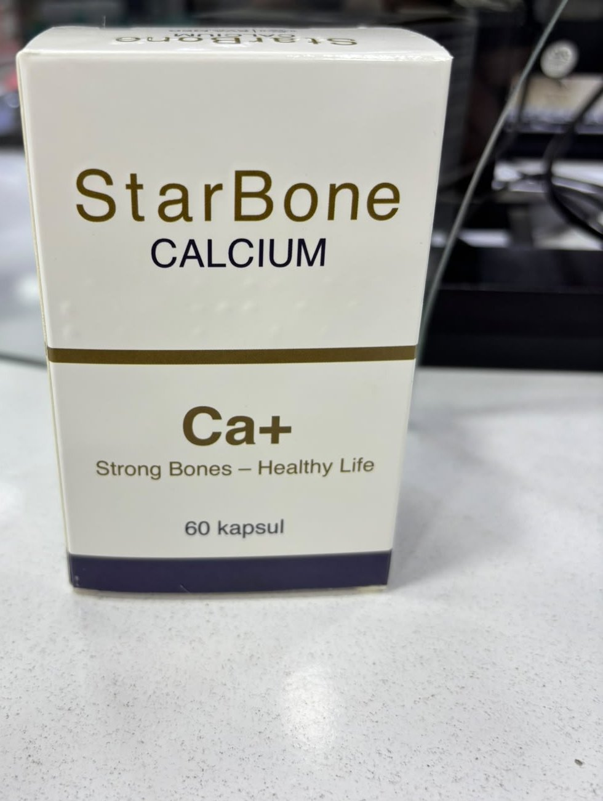

Медицинское изделие
Chondramer
Медицинское изделие, применяемое при болях в суставах и мышцах.
Форма выпускаГель для наружного применения
УпаковкаПластиковая туба 75 г, картонная коробка
Условия отпускаБез рецепта
Срок годности3 года
Состав
| Вещество | Количество |
|---|---|
| Глюкозамина сульфатGlucosamine sulphate | 800 мг |
| Хондроитина сульфатChondroitin sulphate | 200 мг |
| МетилсульфонилметанMethylsulphonylmethane | 200 мг |
| Экстракт босвеллии пильчатойBoswellia serrata extract | 120 мг |
| Масло эвкалиптаEucalyptus oil | 50 мг |
| Масло тимьянаThyme oil | 10 мг |
| Масло гвоздикиClove oil | 5 мг |
| Масло розмаринаRosemary oil | 12 мг |
| КамфораCamphor | 20 мг |
| МентолMenthol | 150 мг |
Вспомогательные вещества
Ароматерапевтические масла (имбирь, лаванда, зира, грецкий орех, апельсин), глицерин, карбомер.
Способ применения и дозировка
- Для местного наружного применения. Наносить непосредственно на область суставов и мышц, втирая массажными движениями.
- Для достижения желаемого эффекта наносить на очищенную кожу не менее 2–3 раз в день.
- Дозировку и возрастные ограничения можно изменять только по рекомендации врача.
Противопоказания
- Индивидуальная чувствительность к любому из компонентов.
Условия хранения
При температуре не выше 25 °C, в сухом, защищённом от света и недоступном для детей месте.
Производитель и данные
- Производитель: FITO LAB MMC (Азербайджан, Абшеронский р-н, пос. Сарай, AZ0121)
- Торговая марка: POLSHA PHARMA SP.Z.O.O., Jana Pawla str/II 3bf/1 05-091 Zabki
- Серия: CM1011 · Произведено: 02.2025 · Годен до: 02.2028
Медицинское изделие, не лекарственное средство.
Не превышайте рекомендуемую суточную дозу. Храните в недоступном для детей месте. При беременности и кормлении грудью, болезни или приёме лекарств проконсультируйтесь с врачом.
Упаковка
Chondramer — фотографии упаковки
Нажмите на фото, чтобы увеличить.
Другие товары

БАД
Karno Mer
Средство для улучшения функции сердечно-сосудистой системы.

БАД
Depomer D3+K2
Дополнительный источник витаминов D3 и K2 — капли для приёма внутрь 15 мл (50 000 МЕ).